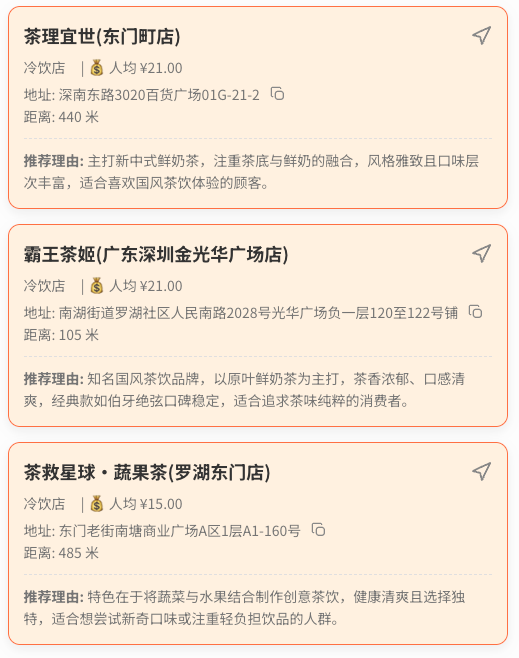

个人独立设计的web网页小工具，有如下功能：
(1)可以选择自动定位也可以选择自己输入位置(输入位置会有自动补齐的选项供选择)，然后可以选择餐厅品类和距离(默认500m也可以筛选或自定义距离)
(2)点击🔍后会出现餐厅列表，这时可以点击随机选一家(不满意也有换一家的按钮提供更多选择)，同时也可以使用AI决策助手帮你选出3家餐厅，同样也设置了换一批选项
(3)也可以直接在对话框中输入要求，让AI根据你的需求帮助选择
(4)每个餐厅卡片都有距离和均价信息，都设置有复制(同时复制店名和详细地址)和导航功能(目前默认跳转到高德地图)

如果AI功能显示异常可能是token用完了，AI功能返回的样式如下，其他功能可以正常使用

返回主页